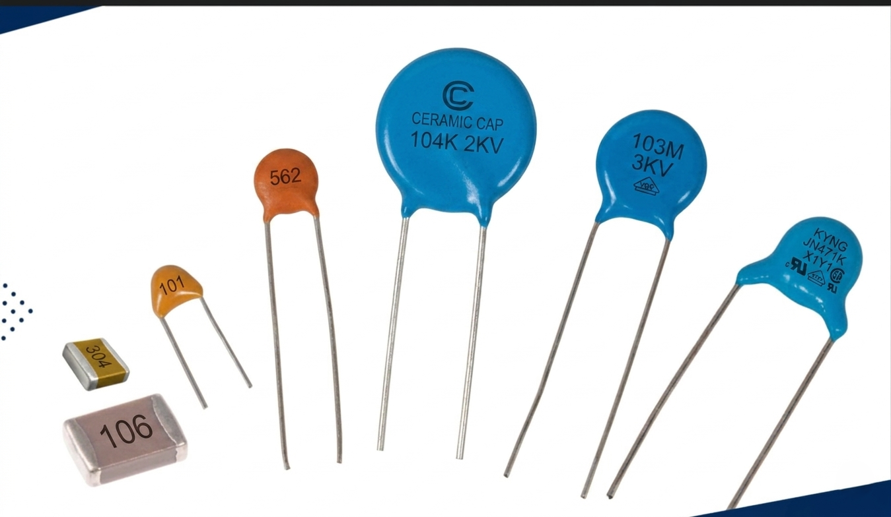
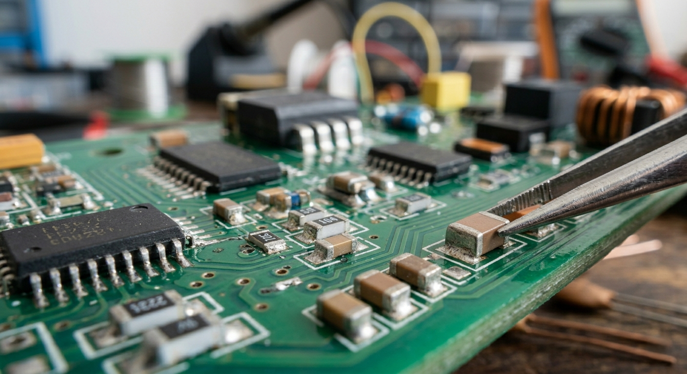
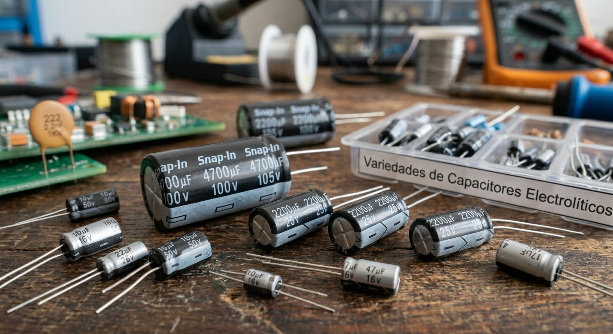
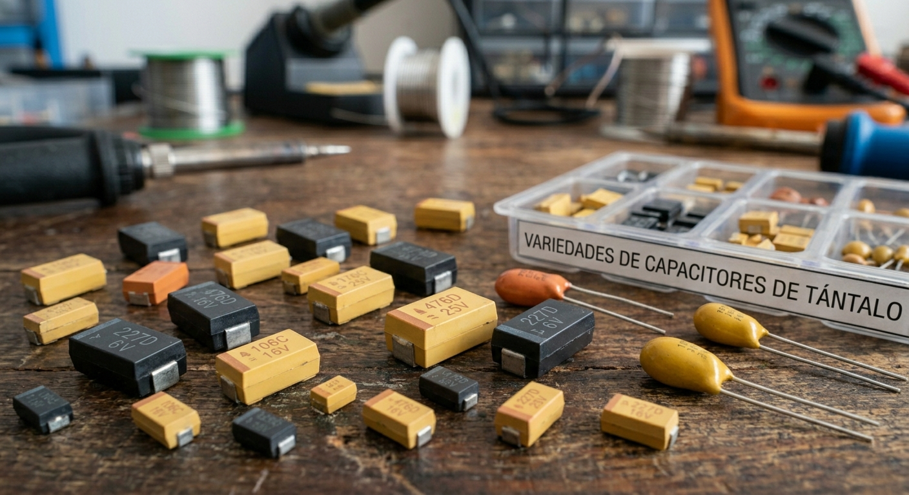
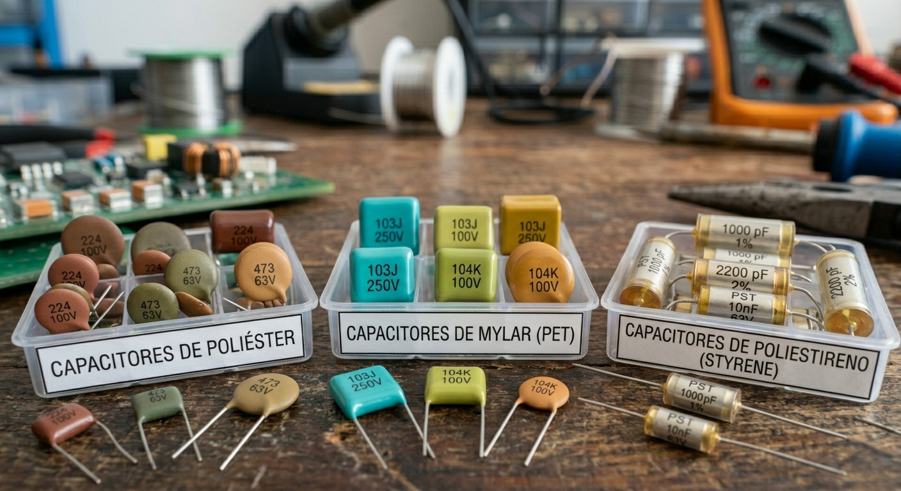
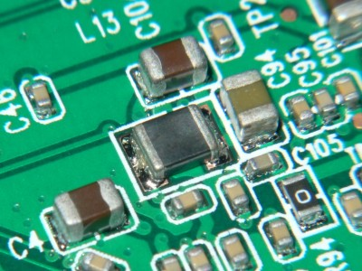
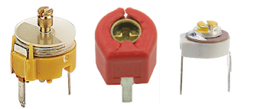
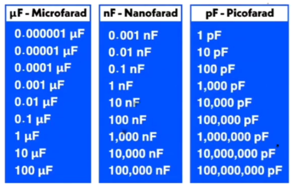
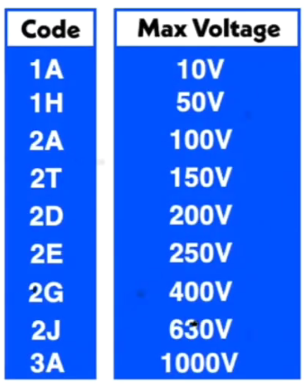
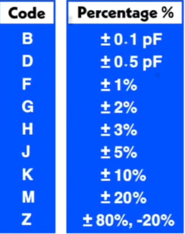

El poder de los capacitores en electrónica
Un capacitor (o condensador) es un componente electrónico pasivo diseñado para almacenar energía eléctrica en un campo eléctrico. Para entender cómo funciona, imagina un tanque de agua o reserva: al igual que un tanque almacena agua para liberarla cuando la presión cae, un capacitor acumula carga eléctrica cuando se conecta a una fuente y puede entregarla rápidamente al circuito cuando es necesario. Su estructura básica consiste en dos placas conductoras separadas por un material aislante llamado dieléctrico.
A diferencia de una batería común que genera energía mediante reacciones químicas, el capacitor actúa como una batería temporal de carga y descarga muy rápida. La magnitud que mide esta capacidad de almacenamiento se denomina capacitancia, y su unidad de medida principal es el Faradio (F), en honor a Michael Faraday. Dado que el Faradio es una unidad inmensa, en la práctica utilizamos submúltiplos como el microfaradio (μF), nanofaradio (nF) y picofaradio (pF).
Dependiendo de su fabricación y materiales, los capacitores se clasifican para diferentes usos en la industria:
Cerámicos
Son componentes electrónicos que utilizan un dieléctrico de cerámica para almacenar carga eléctrica, destacando por su tamaño reducido, estabilidad y bajo costo. No tienen polaridad, lo que significa que pueden conectarse con seguridad a una fuente de CA. y ofrecen una inductancia muy baja. Se utilizan principalmente en circuitos de alta frecuencia, para supresión de ruido y en aplicaciones de miniaturización.


Electrolíticos (Aluminio y Tántalo):
Son polarizados (tienen un polo positivo y uno negativo) y permiten obtener altas capacidades en tamaños reducidos. Los de aluminio son esenciales para el suavizado en fuentes de alimentación, eliminando el rizado tras la rectificación, mientras que los de tántalo son más estables y precisos, aunque más costosos.


Plástico (Poliéster, Mylar, Poliestireno)
No son polarizados y destacan por su estabilidad y bajo costo. Son ideales para acoplamiento de audio, temporización y aplicaciones generales donde se requiere fiabilidad.

Montaje Superficial (SMD)
Son versiones microscópicas diseñadas para soldarse directamente sobre la superficie de las placas de circuito impreso (PCB), fundamentales en la electrónica moderna de consumo.

Variables y Ajustables (Trimmers)
Permiten modificar su capacitancia manualmente mediante un eje o tornillo. Son críticos en circuitos de sintonización de radio y TV, permitiendo seleccionar frecuencias específicas.

Estructura interna
El circuito muestra como un capacitor se caga y descarga cuando se conecta y desconecta una batería, es para ver el funcionamiento de un capacitor de forma interna como al conectar la batería los electrones empiezan a moverse de la placa A a la placa B.
Esto es debido físicamente a la atracción de carga que cuando la batería es conectada los electrones q tienen cargas negativas son atraídos por el lado positivo de la batería y cuando cruzan esta son repelidos por el lado negativo.
De ahí q cargas diferentes se atraen y cargas iguales se repelen.
Nota: Esa placa A es positiva ya que pierde electrones y la B negativa ya que posee exceso de estos.
Curiosidad: Ese positivo se podría pensar que es debido a protones pero esto no es posible ya que en el núcleo estos son fijos y los que se podría mover son los electrones ya que son los que están en orbita.
ANTES DE CARGAR (Estado inicial):
Placa A: 28 electrones ← IGUAL
Placa B: 28 electrones ← IGUAL
→ Ambas neutras, equilibradas
DURANTE LA CARGA:
Placa A: Pierde 10 electrones (se van hacia el + de la fuente) → Queda con 18
Placa B: Recibe esos 10 electrones (vienen del − de la fuente) → Queda con 38
RESULTADO:
Placa A: MENOS electrones → Carga POSITIVA (+)
Placa B: MÁS electrones → Carga NEGATIVA (−)
Para entender por que la corriente es más rápida en un inicio y luego disminuye hasta llegar a cero hay que comprender el concepto de Diferencia de Potencial (V).
La corriente eléctrica no se mueve solo porque haya "electricidad"; se mueve porque hay una diferencia de nivel entre dos puntos.
Imagina dos tanques de agua conectados por un tubo (la resistencia). Si uno está lleno (Batería) y el otro vacío (Capacitor), el agua corre con mucha fuerza hacia el vacío. Esa diferencia de altura es la Diferencia de Potencial.
El inicio: ¡Carrera a máxima velocidad!
En el momento exacto en que cierras el circuito:
La Batería tiene todo su potencial (digamos 12V).
El Capacitor está totalmente vacío (0 V).
La Diferencia: Es máxima (12V - 0V = 12V).
Como hay muchísima "presión" y nada que empuje de vuelta desde el otro lado, los electrones corren a través de la resistencia con toda la intensidad posible. Por eso la corriente empieza en su punto más alto.
Durante la carga: El "Empuje de vuelta"
A medida que los electrones llegan al capacitor, este empieza a llenarse. Al llenarse, el capacitor empieza a generar su propio voltaje (potencial).
Ahora el capacitor ya no tiene 0V, quizás tiene 5V.
La nueva diferencia: 12V(batería) - 5 V(capacitor) = 7V.
La "fuerza neta" que empuja a los electrones a través de la resistencia ahora es menor (pasó de 12V a 7V). Al haber menos presión, la corriente se vuelve más lenta.
Regla clave: La corriente en un circuito RC depende de la diferencia entre la fuente y el capacitor:
\(I=\tfrac{V_{fuente}-V_{capacitor}}{R}\)
El final: El equilibrio de presiones
Llega un momento en que el capacitor se llena tanto que su voltaje iguala al de la batería.
Voltaje Batería: 12 V
Voltaje Capacitor: 12 V
La diferencia: 12V - 12V = 0 V
En este punto, el capacitor está "empujando" hacia atrás con la misma fuerza con la que la batería empuja hacia adelante. Como ya no hay diferencia de potencial, los electrones dejan de moverse. La corriente llega a cero.
La importancia de la resistencia: en la práctica, casi siempre se necesita una resistencia en serie con el capacitor en ambas fases, por qué actúa como un componente vital de seguridad y control.
1. El problema del "Cortocircuito Inicial" (Por qué se necesita al cargar)
Imagínate un capacitor completamente descargado. En el instante exacto en que lo conectas a una batería, sus placas están "vacías" de presión eléctrica. En ese primer milisegundo, el capacitor no ofrece ninguna oposición al paso de los electrones; se comporta exactamente como si fuera un cable de cobre directo (un cortocircuito).
Si conectaras el capacitor directamente a la fuente sin ninguna resistencia de por medio: la fuente intentaría entregar una corriente (cantidad de electrones) casi infinita de golpe.
Esto provocaría un chispazo en el interruptor, podría derretir los cables, dañar la fuente de alimentación, o incluso reventar el capacitor por el calentamiento repentino.
La resistencia en serie actúa como un "embudo" o controlador de tráfico. Limita esa avalancha inicial de electrones a un nivel seguro, dictado por la Ley de Ohm (I = V/R).
2. El control del tiempo (La constante \(\tau\) )
Además de proteger el circuito, la resistencia tiene una función matemática vital: decide qué tan rápido se llena (y se vacía) el capacitor.
En electrónica, esto se define con la constante de tiempo, representada por la letra griega tau \(\tau\):
\(\tau\)= R * C
(Donde R es la Resistencia en Ohmios y C es la Capacitancia en Faradios).
Si pones una resistencia muy pequeña: El embudo es ancho, pasan muchos electrones a la vez, y el capacitor se carga (o descarga) muy rápido.
Si pones una resistencia muy grande: El embudo es estrecho, los electrones pasan poco a poco, y el capacitor tarda mucho más tiempo en alcanzar el voltaje de la fuente.
3. ¿Y en la descarga?
Cuando el capacitor está lleno de energía, si unes sus dos terminales directamente con un cable, soltará toda esa energía de un impacto, creando un arco eléctrico. La resistencia frena esa salida de electrones, permitiendo una descarga suave y controlada.
Fórmula Real
Aquí se evidencia lo que está detrás de la fórmula típica que se usa. Dependiendo de que dieléctrico se utiliza es la capacitancia que habrá.
Ojo: A partir de la fórmula se observa como al estar la distancia en el denominador es lo que trae consigo que disminuya la capacitancia, y al estar el área en el numerador aumente.
Serie, Paralelo
El circuito anterior muestra como al tener 2 capacitores en serie o paralelo aumenta o disminuye la capacitancia total.
En serie se evidencia como al aumentar la distancia entre las placa trae consigo que disminuya la capacitancia de ese capacitor al igual que la total. Es inversamente proporcional; esto se debe ya que en serie el área es la misma.
En paralelo lo que se aumenta o disminuye es el área, dejando fijo la distancia(es la misa para ambos) por lo que trae consigo que también aumente la capacitancia A~C, es directamente proporcional.
Por lo que si tengo un capacitor de gran área y poca distancia entre las placas almaceno mucha energía.
Tiempo de encendido de un led
Simulador de Circuito RC con LED — Efecto de la Constante de Tiempo τ
Este simulador muestra de forma visual cómo la constante de tiempo tau (τ = R × C) controla directamente cuánto tiempo permanece encendido un LED alimentado por un condensador en descarga.
El circuito opera en dos fases: primero la fuente carga el condensador de forma exponencial hasta el voltaje configurado; luego el condensador se descarga a través de la resistencia y el LED, manteniéndolo encendido mientras el voltaje supere el umbral de 2V.
El tiempo real que dura encendido el LED no es exactamente τ, sino que depende de cuánto "margen" hay entre el voltaje inicial y ese umbral, y se calcula como:
t = τ · ln(V₀ / V_umbral)
ejemplo: t = 46.5 · ln(9 / 2)
t = 46.5 · ln(4.5)
t = 46.5 · 1.504
t ≈ 69.9 s
Donde t: es el tiempo que dura el led encendido. τ: es la velocidad de descarga. V₀: voltaje de la batería. V_umbral: umbral del led(punto máximo que mientras lo supere está encendido).
Los controles permiten variar R, C y el voltaje de la fuente para observar cómo cada parámetro afecta la duración del encendido. Esto permite comprobar experimentalmente que duplicar R o C duplica τ y por tanto alarga el tiempo de iluminación de forma proporcional.
Nota: En caso de que el τ sea fijo y aumentes el voltaje de la batería, también aumenta el tiempo de encendido del led ya q el umbral estará más lejos por lo que se tarda más en llegar a él. Ejemplo al subir la fuente a 15V con el mismo τ, el LED durará más porque el condensador empieza más arriba y tarda más en bajar hasta 2V.
Aplicación de filtrado
Frecuencia (Hz) — es la velocidad a la que oscila el ripple de entrada. A mayor frecuencia, los picos y valles se suceden más rápido. El filtro RC es más efectivo cuanto más alta es la frecuencia, porque el condensador no tiene tiempo de descargarse entre pico y pico.
Ripple (%) — es la amplitud de la oscilación sobre el voltaje DC, expresada como porcentaje. Un 30% sobre 12V significa que la señal sube hasta 15.6V y baja hasta 8.4V. Representa qué tan "sucia" o inestable es la fuente de alimentación.
Voltaje DC — es el nivel promedio alrededor del cual oscila la señal. Es el valor útil que queremos mantener estable en la salida.
Resistencia R — junto con C, determina τ. A mayor R, más lenta es la descarga del condensador, lo que mejora el filtrado pero también introduce una caída de tensión en la salida cuando hay corriente de carga.
Capacitancia C — es el parámetro más importante del filtro. A mayor C, mayor es τ y más energía puede almacenar el condensador, por lo que la salida queda más estable. Pasar de 10μF a 10000μF permite ver claramente cómo la línea verde pasa de seguir casi exactamente a la entrada, a quedar prácticamente plana.
τ = R × C — es la constante de tiempo del filtro, en segundos. Representa cuánto tarda el condensador en cargarse o descargarse al 63%. Para que el filtro sea efectivo, τ debe ser mucho mayor que el período de la señal de ripple (T = 1/f). Cuando τ ≫ T, la reducción de ripple supera el 90%.
Frecuencia de corte f_c = 1/(2πτ) — es la frecuencia a partir de la cual el filtro empieza a atenuar señales. Toda frecuencia de ripple por encima de f_c queda reducida. Si f_c = 2Hz y el ripple va a 60Hz, el filtro atenúa fuertemente esa oscilación.
Ejemplo para entender mejor los cálculos: con los valores por defecto del simulador: R = 100Ω, C = 1000μF, Vs = 12V, ripple = 30%, f = 60Hz.
1. Constante de tiempo τ
τ = R × C = 100Ω × 1000×10⁻⁶F = 0.1 s = 100 ms
2. Frecuencia de corte f_c
f_c = 1 / (2π × τ) = 1 / (2π × 0.1) = 1 / 0.628 = 1.59 Hz
Como f_ripple = 60Hz está muy por encima de f_c = 1.59Hz, el filtro atenúa fuertemente.
3. Atenuación teórica a 60Hz
La función de transferencia del filtro RC en magnitud es:
|H(f)| = 1 / √(1 + (f/f_c)²) = 1 / √(1 + (60/1.59)²) = 1 / √(1 + 1418) = 1 / 37.7 = 0.0265
Eso significa que el ripple de salida es el 2.65% del de entrada → reducción del 97.4%.
4. Voltajes reales de ripple
La señal de entrada oscila ±30% sobre 12V:
V_ripple_entrada = 12 × 0.30 × 2 = 7.2 V pico a pico
V_ripple_salida = 7.2 × 0.0265 = 0.19 V pico a pico
5. Comprobación con τ vs T
T_ripple = 1/f = 1/60 = 16.7 ms
τ = 100 ms → τ/T = 100/16.7 = 6×
Regla práctica: cuando τ > 5T el filtro reduce el ripple por encima del 95%, que es exactamente lo que muestra el simulador.
Otras aplicaciones
Suministro de energía en sistemas eléctricos
En las redes eléctricas, los condensadores ayudan a estabilizar la tensión y el flujo de energía. Los condensadores de gran tamaño se utilizan para almacenar el exceso de energía y liberarlo cuando la demanda alcanza su punto máximo, con el fin de garantizar un suministro eléctrico constante. Esto es importante para evitar apagones y gestionar la variabilidad de las fuentes de energía.
Los condensadores también mejoran la eficiencia de la transmisión de energía a largas distancias al reducir la pérdida de energía y mejorar la regulación del voltaje. Al compensar la corriente retrasada y reducir la potencia reactiva, ayudan a mantener la calidad del suministro eléctrico.
Tecnología de pantalla táctil
El condensador es una pieza clave de la tecnología de pantalla táctil utilizada en teléfonos inteligentes, tabletas y muchos otros dispositivos. Estas pantallas detectan el tacto mediante cambios en el campo eléctrico causados por la naturaleza conductora del dedo humano.
Cuando nuestro dedo se acerca a la pantalla, cambia el campo eléctrico local, que es detectado por los sensores. A continuación, el dispositivo procesa este cambio para realizar la acción deseada, como abrir una aplicación o desplazarse por una página. Esta tecnología permite gestos multitáctiles, como pellizcar para hacer zoom o deslizar el dedo. Esto mejora la interacción del usuario con los dispositivos.
Diagnóstico y tratamiento de imágenes médicas
En tecnología médica, el condensador se utiliza en diversas herramientas de diagnóstico e imagen. Los sensores capacitivos forman parte de algunos tipos de dispositivos médicos táctiles. Permiten al personal sanitario navegar por las imágenes o los datos del paciente con facilidad.
Además, los condensadores son útiles en técnicas como la tomografía de impedancia eléctrica (TIE), en la que las mediciones de capacitancia ayudan a crear imágenes del interior del cuerpo. Pueden detectar cambios en la impedancia eléctrica y ofrecen una forma sencilla de controlar y diagnosticar problemas de salud.
Los condensadores también alimentan desfibriladores, que suministran una descarga repentina de energía al corazón para tratar arritmias graves. La capacidad de los condensadores para liberar rápidamente la energía almacenada puede salvar vidas al restablecer un ritmo cardíaco normal en situaciones críticas.
Condensadores de arranque y funcionamiento de motores
Se utilizan en los motores eléctricos de aparatos como aires acondicionados, lavadoras y frigoríficos. Son útiles para arrancar y hacer funcionar los motores de forma eficiente. Mantienen un suministro de tensión constante para un funcionamiento sin problemas. Esta función garantiza el funcionamiento eficaz de los electrodomésticos. La aplicación de condensadores en estos motores también reduce el consumo de electricidad. Esto contribuye a que los electrodomésticos sean más respetuosos con el medio ambiente.
Condensadores como Sensores
Se utilizan como sensores para medir una gran variedad de cosas, como la humedad del aire, los niveles de combustible y la tensión mecánica. La capacitancia de un dispositivo depende de su estructura. Los cambios en la estructura pueden medirse como una pérdida o ganancia de capacitancia.
En las aplicaciones de detección se utilizan dos aspectos de un condensador: la distancia entre las placas paralelas y el material entre ellas. El primero se utiliza para detectar cambios mecánicos como la aceleración y la presión. Incluso cambios mínimos en el material entre las placas pueden ser suficientes para alterar la capacitancia del dispositivo, un efecto que se aprovecha cuando se detecta la humedad del aire.
Acoplamiento
Pueden dejar pasar la CA pero bloquear la CC, este es un proceso llamado Acoplamiento de Condensadores. Se utiliza en el caso de un altavoz. Los altavoces funcionan convirtiendo una corriente alterna en sonido, pero podrían resultar dañados por cualquier corriente continua que les llegue. Un condensador impide que la corriente continua dañe los altavoces.
Procesamiento de señales en sistemas de comunicación
Es esencial en equipos de radio y audio para aislar las señales de audio de los ruidos de la fuente de alimentación. Los condensadores también sintonizan circuitos a frecuencias específicas, lo que permite a radios y televisores seleccionar distintos canales.
Algo más de la práctica
Valores del capacitor



Polarización
Completa
Lee el texto y completa las palabras que faltan.
Qué tipo de condensador es el más utilizado para suavizar una señal @@electrolítico de aluminio@@.
Cuáles son los más comunes para soldarlos directamente en la placa @@SMD@@.
En la estructura interna se crea un campo @@eléctrico@@ cuando se conecta una batería trayendo consigo una acumulación de cargas en el lado @@negativo@@ del condensador.
Quién es la encargada de el tiempo de descarga del condensador @@tau@@.
La capacitancia aumenta debido a dos factores aumento de las @@áreas@@ de las placas y @@disminución@@ de las @@distancias@@ entre las placas
Sabiendo que el voltaje del condensador está por debajo del voltaje @@umbral@@ del led, este acaba de @@apagarse@@.
{kind=link}